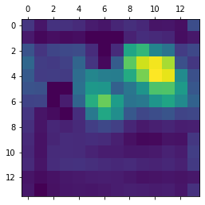

Keras google colab
import numpy as np
import tensorflow as tf
from tensorflow import keras
# Display
from IPython.display import Image, display
import matplotlib.pyplot as plt
import matplotlib.cm as cm
tf.keras.applications.vgg16.VGG16(
include_top=True, weights='imagenet', input_tensor=None,
input_shape=None, pooling=None, classes=1000,
classifier_activation='softmax'
).summary()
Model: "vgg16"
_________________________________________________________________
Layer (type) Output Shape Param #
=================================================================
input_3 (InputLayer) [(None, 224, 224, 3)] 0
block1_conv1 (Conv2D) (None, 224, 224, 64) 1792
block1_conv2 (Conv2D) (None, 224, 224, 64) 36928
block1_pool (MaxPooling2D) (None, 112, 112, 64) 0
block2_conv1 (Conv2D) (None, 112, 112, 128) 73856
block2_conv2 (Conv2D) (None, 112, 112, 128) 147584
block2_pool (MaxPooling2D) (None, 56, 56, 128) 0
block3_conv1 (Conv2D) (None, 56, 56, 256) 295168
block3_conv2 (Conv2D) (None, 56, 56, 256) 590080
block3_conv3 (Conv2D) (None, 56, 56, 256) 590080
block3_pool (MaxPooling2D) (None, 28, 28, 256) 0
block4_conv1 (Conv2D) (None, 28, 28, 512) 1180160
block4_conv2 (Conv2D) (None, 28, 28, 512) 2359808
block4_conv3 (Conv2D) (None, 28, 28, 512) 2359808
block4_pool (MaxPooling2D) (None, 14, 14, 512) 0
block5_conv1 (Conv2D) (None, 14, 14, 512) 2359808
block5_conv2 (Conv2D) (None, 14, 14, 512) 2359808
block5_conv3 (Conv2D) (None, 14, 14, 512) 2359808
block5_pool (MaxPooling2D) (None, 7, 7, 512) 0
flatten (Flatten) (None, 25088) 0
fc1 (Dense) (None, 4096) 102764544
fc2 (Dense) (None, 4096) 16781312
predictions (Dense) (None, 1000) 4097000
=================================================================
Total params: 138,357,544
Trainable params: 138,357,544
Non-trainable params: 0
_________________________________________________________________
def get_img_array(img_path, size):
# `img` is a PIL image of size 224x224
img = keras.preprocessing.image.load_img(img_path, target_size=size)
# `array` is a float32 Numpy array of shape (224, 224, 3)
array = keras.preprocessing.image.img_to_array(img)
# We add a dimension to transform our array into a "batch"
# of size (1, 224, 224, 3)
array = np.expand_dims(array, axis=0)
return array
def make_gradcam_heatmap(
img_array, model, last_conv_layer_name, target_category=None
):
# First, we create a model that maps the input image to the activations
# of the last conv layer as well as the output predictions.
# In other words, this is like the forward hook of torch.
grad_model = tf.keras.models.Model(
[model.inputs],
[model.get_layer(last_conv_layer_name).output, model.output],
)
# Then, we compute the gradient of the top predicted class for our input image
# with respect to the activations of the last conv layer
with tf.GradientTape() as tape:
# last_conv_layer_output: Note this is merely the output when the inputs propagate to the last conv layer.
# i.e. this is the output of the last conv layer. and is not flattened yet
last_conv_layer_output, y_logits = grad_model(img_array)
print(y_logits.shape)
# last_conv_layer_output: shape = (1, 14, 14, 512)
# which is 512 number of filters of 14 x 14 filters.
# print(last_conv_layer_output.shape)
# print(y_logits[:, 386]) should be the same as what we had earlier!
if target_category is None:
target_category = tf.argmax(y_logits[0])
target_category_logits = y_logits[:, target_category]
print(target_category_logits)
# This is the gradient of the output neuron (top predicted or chosen)
# with regard to the output feature map of the last conv layer
grads = tape.gradient(target_category_logits, last_conv_layer_output)
# print(grads.shape) same shape as last conv layer! (1, 14, 14, 512)
# do not confuse gradient of loss fn with respect to inputs
# we are talking about gradient of y_c with respect to feature maps (not the raw image input array), note the distinction.
# so we r checking the rate of change of y_c wrt the feature maps
# we are checking the rate of change of elephant wrt to elephants feature maps
# This is a vector where each entry is the mean intensity of the gradient
# over a specific feature map channel
pooled_grads = tf.reduce_mean(grads, axis=(0, 1, 2))
# print(pooled_grads.shape) # (512,)
# by hn
grads_transposed = np.transpose(np.squeeze(grads, axis=0), axes=None)
# print(grads_transposed.shape)
for feature_map in grads_transposed:
mean_feature_map = np.mean(feature_map)
print(mean_feature_map) # same as print(pooled_grads[0])
print(pooled_grads[0])
break
# one should readily understand
# We multiply each channel in the feature map array
# by "how important this channel is" with regard to the top predicted class
# then sum all the channels to obtain the heatmap class activation
last_conv_layer_output = last_conv_layer_output[
0
] # this is just squeeze dimension from (1,14,14,512) to (14,14,512)
print(last_conv_layer_output.shape)
# in Python "..." means "all dimensions prior to" add new axis.
# print(pooled_grads[..., tf.newaxis].shape) # (512, ) to (512, 1)
print(last_conv_layer_output)
heatmap = (
last_conv_layer_output @ pooled_grads[..., tf.newaxis]
) # same as heatmap = last_conv_layer_output @ tf.expand_dims(pooled_grads, axis=-1)
print(heatmap.shape) # (14, 14, 1)
heatmap = tf.squeeze(heatmap) # (14, 14)
# For visualization purpose, we will also normalize the heatmap between 0 & 1 RELU OPS
heatmap = tf.maximum(heatmap, 0) / tf.math.reduce_max(heatmap)
return heatmap.numpy()
model_builder = keras.applications.vgg16.VGG16
img_size = (224, 224)
preprocess_input = keras.applications.vgg16.preprocess_input
decode_predictions = keras.applications.vgg16.decode_predictions
last_conv_layer_name = "block5_conv3"
# The local path to our target image
img_path = keras.utils.get_file(
"african_elephant.jpg", "https://i.imgur.com/Bvro0YD.png"
)
# Prepare image
img_array = preprocess_input(get_img_array(img_path, size=img_size))
# Make model
model = model_builder(weights="imagenet")
# Remove last layer's softmax
model.layers[-1].activation = None
# Print what the top predicted class is.
# preds has a shape of (1, 1000)
preds = model.predict(img_array)
# if you print argmax along column, or simply put
# argmax of all logits in the 1000 predictions, we have 386 the elephant as index
print(
f"preds argmax: {preds.argmax(axis=1)}\n preds value: {preds[:, preds.argmax(axis=1)]}"
)
# !!!
# Important is we did not activate softmax here, in fact, since softmax is monotonic, when pre-softmax, the logits output will tell us already which class is most probable!
# means to say even we did not make the logits in between 0 and 1, the ranking is preserved in the sense that values in logits the highest is the most probable when transformed by softmax
# decode predictions - this is a convenient function from keras
print("Predicted:", decode_predictions(preds, top=1)[0])
preds argmax: [386]
preds value: [[23.632017]]
Predicted: [('n02504458', 'African_elephant', 23.632017)]
# Generate class activation heatmap
heatmap = make_gradcam_heatmap(img_array, model, last_conv_layer_name)
(1, 1000)
tf.Tensor([23.632017], shape=(1,), dtype=float32)
-0.00016475434
tf.Tensor(-0.00016475434, shape=(), dtype=float32)
(14, 14, 512)
tf.Tensor(
[[[0. 0. 0. ... 0. 0. 0.]
[0. 0. 0. ... 0. 0. 0.]
[0. 0. 0. ... 0. 0. 0.]
...
[0. 0. 0. ... 0. 0. 0.]
[0. 0. 0. ... 0. 0. 0.]
[0. 0. 0. ... 0. 0. 0.]]
[[0. 0. 0. ... 0. 0. 0.]
[0. 0. 0. ... 0. 0. 0.]
[0. 0. 0. ... 0. 0. 0.]
...
[0. 0. 0. ... 0. 0. 0.]
[0. 0. 0. ... 0. 0. 0.]
[0. 0. 0. ... 0. 0. 0.]]
[[0. 0. 0. ... 0. 0. 0.]
[0. 0. 0. ... 0. 0. 0.]
[0. 0. 0. ... 0. 0. 0.]
...
[0. 0. 0. ... 0. 0. 0.]
[0. 0. 0. ... 0. 0. 0.]
[0. 0. 0. ... 0. 0. 0.]]
...
[[0. 0. 0. ... 0. 0. 0.]
[0. 0. 0. ... 0. 0. 0.]
[0. 0. 0. ... 0. 0. 0.]
...
[0. 0. 0. ... 0. 0. 0.]
[0. 0. 0. ... 0. 0. 0.]
[0. 0. 0. ... 0. 0. 0.]]
[[0. 0. 0. ... 0. 0. 0.]
[0. 0. 0. ... 0. 0. 0.]
[0. 0. 0. ... 0. 0. 0.]
...
[0. 0. 0. ... 0. 0. 0.]
[0. 0. 0. ... 0. 0. 0.]
[0. 0. 0. ... 0. 0. 0.]]
[[0. 0. 0. ... 0. 0. 0.]
[0. 0. 0. ... 0. 0. 0.]
[0. 0. 0. ... 0. 0. 0.]
...
[0. 0. 0. ... 0. 0. 0.]
[0. 0. 0. ... 0. 0. 0.]
[0. 0. 0. ... 0. 0. 0.]]], shape=(14, 14, 512), dtype=float32)
(14, 14, 1)
# Display heatmap
plt.matshow(heatmap)
plt.show()

def save_and_display_gradcam(img_path, heatmap, cam_path="cam.jpg", alpha=0.4):
# Load the original image
img = keras.preprocessing.image.load_img(img_path)
img = keras.preprocessing.image.img_to_array(img)
# Rescale heatmap to a range 0-255
heatmap = np.uint8(255 * heatmap)
# Use jet colormap to colorize heatmap
jet = cm.get_cmap("jet")
# Use RGB values of the colormap
jet_colors = jet(np.arange(256))[:, :3]
jet_heatmap = jet_colors[heatmap]
# Create an image with RGB colorized heatmap
jet_heatmap = keras.preprocessing.image.array_to_img(jet_heatmap)
jet_heatmap = jet_heatmap.resize((img.shape[1], img.shape[0]))
jet_heatmap = keras.preprocessing.image.img_to_array(jet_heatmap)
# Superimpose the heatmap on original image
superimposed_img = jet_heatmap * alpha + img
superimposed_img = keras.preprocessing.image.array_to_img(superimposed_img)
# Save the superimposed image
superimposed_img.save(cam_path)
# Display Grad CAM
display(Image(cam_path))
save_and_display_gradcam(img_path, heatmap)
img_path = keras.utils.get_file(
"cat_and_dog.jpg",
"https://storage.googleapis.com/petbacker/images/blog/2017/dog-and-cat-cover.jpg",
)
display(Image(img_path))
# Prepare image
img_array = preprocess_input(get_img_array(img_path, size=img_size))
# Print what the two top predicted classes are
preds = model.predict(img_array)
print("Predicted:", decode_predictions(preds, top=2)[0])
Downloading data from https://storage.googleapis.com/petbacker/images/blog/2017/dog-and-cat-cover.jpg
73728/72452 [==============================] - 0s 0us/step
81920/72452 [=================================] - 0s 0us/step

Predicted: [('n02106030', 'collie', 8.145561), ('n02110806', 'basenji', 7.812906)]
heatmap = make_gradcam_heatmap(img_array, model, last_conv_layer_name, pred_index=260)
save_and_display_gradcam(img_path, heatmap)
heatmap = make_gradcam_heatmap(img_array, model, last_conv_layer_name, pred_index=285)
save_and_display_gradcam(img_path, heatmap)